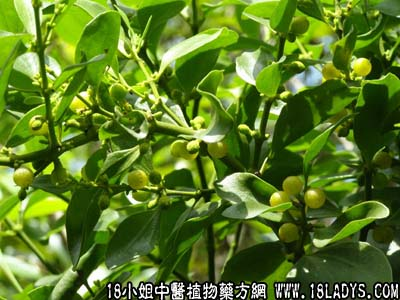

柚树寄生(中草药名称:东方槲寄生)(中药大全科目:桑寄生科)

植物名：东方槲寄生。
生长环境：本品为寄生小灌木。生长于别种植物上的寄生植物。
分布：我国南部和西南地区，广东省以中部和南部较多。此外，亚洲热带各地亦有。
入药部分：全株。
采集期：夏、秋。
自采地点：家种。
性味：性平、味苦。
功能：清心肺热、行气、解麻疹毒。
主治、用量和用法：1、麻疹气喘：干用5钱至1两，清水煎服；2、麻疹咳嗽：用法同上；3、小肠疝气：干用1至2两，猪瘦肉适量，清水煎服；4、胃痛：用法同上。
（方歌）柚树寄生麻疹宝，咳嗽气喘皆能保，更治小肠疝气疼，瘦肉同煎胃痛好。
参考资料：本品以陈久者为佳。在麻疹期及后期常用。麻疹肌肤痕痒，可用作浴汤。
《广州常用草药验方集解》防治麻疹经验方：柚树寄生1至2两、玉芙蓉5钱至1两、塘底荔枝叶1两、清水三碗，煎成大半碗，分二、三次服，解麻毒。
（方解）以上三药，俱为民间防治透麻毒外出，治麻后喘咳腹泻；塘底荔枝叶乃塘边荔枝树叶落于塘底为泥所盖者，因经久变性，化燥为润，能清肺金与大肠热，喜治麻后咳、痢；玉芙蓉芳香化浊、清热毒。患麻疹者并发或继发剧咳气喘、下痢，医家皆认为重症，本方药性平和，为防治麻疹并发病稳当之方。
（方歌）柚树寄生麻疹好，玉芙透毒为至宝，配入塘底荔枝叶，麻后咳痢能保。